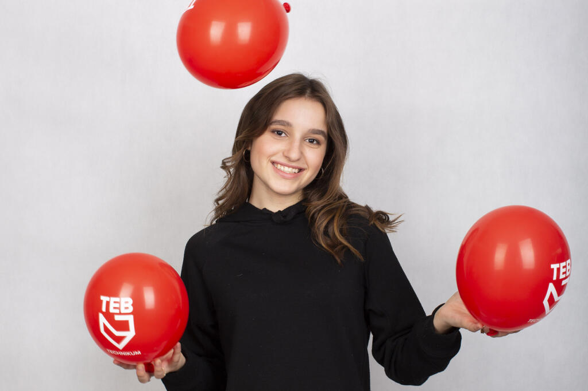

Dmowskiego 16A
21 marca 2023
10:00
Plan dni otwartych :
sala 02 - powitanie gości, prezentacja informacji o szkole
sala 09 - pracownia fotograficzna - zajęcia prowadzone w pracowni,
wykonywanie zdjęć różnym ustawieniem
sala 103 - zespół muzyczny
sala 106 - Warsztat reklamowy
sala107 - google VR
sala 108 weterynaria - poznanie kierunku
sala 206 - programiści - prezentacja i wydruk 3D
sala 208 - sala pokazowa dla gości, mogą przetestować sprzęt
sala 301 / 302 - wystawa fotografii
sala 306/307- finał turnieju CS:GO ze streamingiem na żywo
sala 305 PKO, 313 PKO - fryzjerstwo - odwiedzjący będą mogli
skorzystać z możliwości stylizacji włosów, pielęgnacji itp., w
planach quiz z nagrodami, będą vouchery na czesanie w TEB salonie
i jeśli się uda, nagrody rzeczowe
sala 506 PKO - montażowa
sala 508B PKO - reklama - klasa 4d1 pokaz pracowni, opis kierunku,
konkurs
Kim możesz zostać?
Zobacz, jakie kierunki są dostępne w TEB Technikum
Technik fotografii i multimediów
Lubisz robić zdjęcia? Sprawia Ci przyjemność ich obróbka i publikowanie w sieci?
Jeśli tak, zostań Technikiem fotografii i multimediów! Dzięki patronatowi Canon,
tylko u nas znajdziesz najlepszy sprzęt tej firmy dokładnie taki sam, jakim robią zdjęcia prawdziwi zawodowcy.
Będziesz też tworzyć profesjonalne projekty multimedialne i weźmiesz udział w warsztatach prowadzonych przez specjalistów z firmy Canon.
Technik Programista
Technik programista to idealny zawód dla miłośników nowoczesnych technologii,
komputerów, aplikacji internetowych i mobilnych, czyli szeroko rozumianej branży IT.
Programowanie obecnie rządzi światem. Kod napędza biznes, ożywia maszyny, steruje robotami,
automatyzuje procesy, rządzi produkcją, stanowi DNA gier, kontroluje inteligentne domy.
Programiści praktycznie tworzą świat XXI wieku, dlatego jako technik programista będziesz mieć możliwość nie tylko bardzo szybko znaleźć pracę,
ale też pracować zdalnie, założyć własną firmę, a także rozwijać się dalej na studiach.
Technik Weterynarii
Czujesz, że masz szczególny kontakt ze zwierzętami i chcesz im pomagać?
Nie straszna jest Ci wizja asystowania podczas operacji czy podania zastrzyku od fretki po nosorożca?
W takim razie Technik weterynarii jest zawodem dla Ciebie!
Fachowca w tej dziedzinie zatrudnią nie tylko prywatne lecznice, ale także zakłady hodowli zwierząt,
inspekcje weterynaryjne, schroniska i ogrody zoologiczne.
Technik Informatyk
To idealny zawód dla fascynatów nowych technologii, komputerów, aplikacji internetowych,
czyli szeroko rozumianej branży IT. U nas otrzymasz nowoczesne kształcenie dzięki wsparciu Microsoft.
Będziesz miał możliwość bezpłatnego uzyskania międzynarodowych certyfikatów MOS i MTA.
Otrzymasz pełny pakiet Microsoft Office 365, a także dodatkowe godziny w programie na zajęcia z wykorzystaniem usług Office 365.

Technik reklamy
Jeśli lubisz media społecznościowe i masz potencjał twórczy,
Technik reklamy jest zawodem dla Ciebie.
To kierunek dla osób kreatywnych, komunikatywnych, otwartych na nowe doświadczenia,
łatwo nawiązujących kontakty z ludźmi.
Zdobędziesz u nas nie tylko poszukiwane na rynku pracy umiejętności w zakresie grafiki komputerowej,
ale również reklamy w mediach społecznościowych.
Technik organizacji turystyki
Jesteś świetnym organizatorem i sprawnie ogarniasz rzeczywistość?
Pasjonują Cię podróże i turystyka? Dynamicznie rozwijający się rynek turystyczny i hotelowy czeka na Ciebie!
Podróże w erze globalizacji są coraz łatwiejsze i popularniejsze,
więc pracę znajdziesz zarówno w kraju, jak i za granicą.
Dodatkowo w podbijaniu świata pomoże Ci w tym znajomość branżowego angielskiego,
którego nauczysz się u nas.
Technik usług fryzjerskich
Jesteśmy jedyną w Polsce klasą patronacką Schwarzkopf Professional.
Nauka u nas to profesjonalne szkolenia z najnowszych trendów, materiały Schwarzkopf Professional ASK Academy,
certyfikaty na koniec nauki oraz możliwość udziału w pokazach i konkursach fryzjerskich.
Dzięki temu będziesz uczyć się nowoczesnego fryzjerstwa, które nadąża za trendami i dynamicznie rozwijającym się rynkiem.
Technik esport
Czy kiedykolwiek marzyłeś o tym, aby w szkole na legalu grać w gry i to na najnowocześniejszym sprzęcie MSI?
Przyjdź do nas! Dzięki objęciu patronatem klas e-sportowych, firma MSI zapewnia: praktyki zawodowe w dziale serwisu we Wrocławiu dla najlepszych,
możliwość udziału w wybranych imprezach, wsparcie turniejów e-sportowych i konferencji informatycznej dla uczniów,
możliwość wizyt w gameroomie MSI. A do tego będziesz miał możliwość wzięcia udziału w profesjonalnej lidze e-sportowej.
Technik logistyk
Potrafisz dobrze organizować czas?
Umiesz ogarniać wiele rzeczy naraz?
Teraz możesz to robić zawodowo!
Technik logistyk planuje, organizuje, kieruje i kontroluje transport towarów, optymalizując jednocześnie czas i koszty dostawy.
To zawód bardzo poszukiwany, ponieważ logistycy są niezbędni w niemal każdej dziedzinie gospodarki. Kierunek polecany dla osób kreatywnych i obdarzonych zdolnościami planowania.